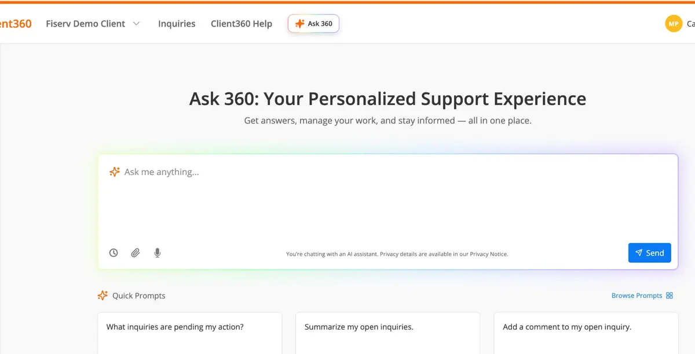
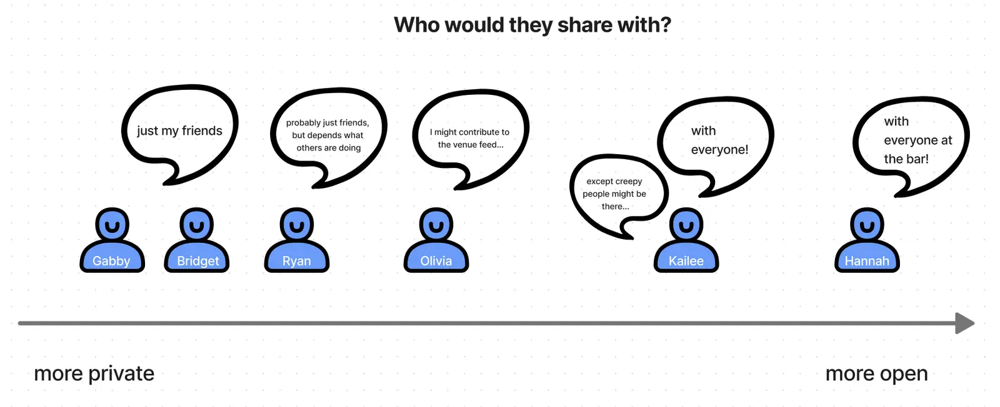

Hi, I'm Casey.
Right now that means Ask 360, an AI support assistant used by financial institutions. I write the requirements behind it and run the research with the clients who use it.
Primary designer on the redesign of how clients get service. Interviews to find the real problem, iterative design, and an AI assistant built into the portal as one continuous journey. Piloting with 400 clients.

Implementation projects lived in a tool of their own, away from the portal where clients did everything else. Requirements and design for building them in natively, rather than linking out and leaving the split in place.
Four rounds of research, 55 interviews and 400+ survey responses, ending in the answer the business didn't want: people already have social apps, and a night out is the worst moment to ask for their attention.
